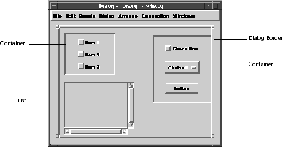
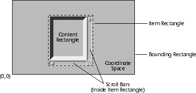
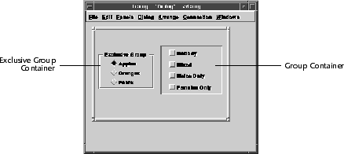

Container
The Container class provides services for manipulating containers, dialog items that contain other dialog items. A container can hold any number of dialog items, including other containers. In many ways, a container is similar to a dialog because it manages and displays a collection of dialog items.
The rectangle used to display a container can show either the container's entire contents, or only a portion of it. You can add scroll bars to a container for scrolling through the contents. The Container class provides the ability to enable or disable the entire contents of a container. It also defines how pressing the tab key changes the focus of the items in a container.
Figure 14. Containers and container items

Containers use "spring solutions" to arrange their contents. For information on creating and manipulating spring solutions, refer to the Spring chapter.
Groups and exclusive groups use control items to display their information. Refer to the Control chapter for more information on control items.
Like any other dialog item, a container can be placed inside another container. This allows you to define a GUI with an arbitrarily deeply nested hierarchy of coordinate systems.
The Visual Resource Builder represents each of these types of containers as unique dialog items ("Containers," "Grouped Containers," and "Exclusive Groups") that can be added to a dialog.
A container has the following three associated rectangles, as shown in Figure 15:

If you do not assign scroll bars to a container, the content rectangle expands to the size of the bounding rectangle. If you do assign scroll bars, the size of the container itself controls the size of the content rectangle.
If you do not specify a spring solution, a default arrangement occurs for grouped containers and exclusive groups.
A grouped container can have a spring solution, although the Container class automatically arranges items if you do not specify a solution. This automatic arrangement places the items in a left-to-right, top-to-bottom order, according to the size of the grouped container.
Figure 16. Grouped containers

Note that you specify the type of container when it is created. You can specify a regular container, a group, or an exclusive group. You cannot later change a regular container into a group, or a group into a regular container. Instead, use CreateGroup or CreateExclusiveGroup to create groups or exclusive groups.
Use AppendItem to add an item to a container. The Container class draws the new item behind all other items in the container, and destroys it at the moment of the container's destruction.
Use DeleteItem to remove an item from a container.
Refer to Example 11 for a demonstration of using dialog item lists to locate container items.
To obtain a reference to an item with a known index number, use GetItemAt. Similarly, use GetItemIndex to determine the index number for a known container item.
Example 11 uses these functions to loop through the items in a container in order to find a dialog item by its title.
Example 11. Finding an item in a container by title
Similarly, use GetFocus to find the dialog item that is currently focused, which returns NULL if there is no focused item.
Example 12. Finding the current selection in a container
Groups and exclusive groups initially attempt to arrange their contents by using a spring solution. If no spring solution is assigned, the Container class automatically arranges the contents in a left-to-right, top-to-bottom order. The group size in relation to the individual item's size determines the row and column location of each item. Refer to Figure 17 for an illustration of automatic arranging.
Figure 17. Automatic group arrangements
Use GetBounds to get the bounding rectangle of a container, and use GetContent to get the content rectangle of a container.
Note that if the container is a group or exclusive group, or if a regular container does not have scroll bars, both of these functions return the same rectangle size.
Use SetBounds to set the bounding rectangle of a container. If you want to find the minimum size of the container (according to its spring solution), use CalcMinSize.
If you want to rearrange the contents of a container or group to fit within a specified rectangle, use Arrange. This arranges the contents in the given rectangle according to the current spring solution. If no spring solution is assigned to a group, the contents are automatically arranged.
Example 13 illustrates how to change the bounds of a container to be the size of the current dialog.
Example 13. Changing the bounds of a container
Some container attributes stand out because of their non-typical behavior.
The flat keyboard traversal style causes the container to behave as if the container's items are part of the dialog. This means that pressing the "Tab" key focuses on a dialog's items until you reach the container. Focus is then transferred to the container, allowing the end-user to "Tab" through the container's items. When you focus the last item in the container, and the "Tab" key is pressed, the keyboard focus moves out of the container to the parent dialog. A flat border style indicates that the container uses flat keyboard traversal.
The inset keyboard traversal style causes the container to behave as if the container is its own dialog. This means that once an inset container gains keyboard focus from the parent dialog, the keyboard focus then circulates through the container and its items, never leaving the container. An inset border style indicates that the container uses inset keyboard traversal. Figure 18 illustrates the different border options.
Figure 18. Container borders
You set keyboard traversal in the Visual Resource Builder, or by using SetFlat, passing TRUE to specify a flat border, and FALSE to specify an inset border. Use IsFlat to determine the type of keyboard traversal style assigned to a container.
Use SetBorder to specify whether a border should be drawn around the container, and use HasBorder to determine whether borders are drawn for the container.
Instead, you should use the container find operation. Assuming the container has the tag name of "Common Buttons" the code fragment to find the button "OK" looks like this:
Example 14. Finding an item in a dialog or a container
However, the Container class calls a group's and exclusive group's notification procedure whenever the end-user selects any item in the group or exclusive group. The Container class allows you to create and assign your own notification procedure (of the type vcontainerNoteProcNnotify) to a subclassed container by using SetNotify.
Example 15 demonstrates the use of a group notify method. It dynamically modifies the state and attributes of a dialog item called "Palette" (located in the same dialog as the container).
Example 15. Using a notify method
Relationship to Other Classes
All container classes are subclasses of dialog items. Refer to the Dialog Item chapter for information on dialog items. Containers, Groups, and Exclusive Groups
A container is a dialog item that behaves, in many ways, like a dialog; it has both a spring solution and a collection of dialog items. A container can also have optional scroll bars. The Container class additionally defines groups (or "grouped containers") as collections of items that can be automatically arranged. You can also create exclusive groups, groups where the end-user can select only one control item at any given time. Containers
Containers use a spring solution to dynamically position their contents. You can define spring solutions interactively in the Visual Resource Builder, or programmatically using the Spring class.
Figure 15. Container coordinate system
Encloses a container's entire contents, defining the boundaries of the container.
Position (0, 0) in the container coordinate system is at the lower left corner of the
bounding rectangle. The spring solution of the container's items determines the
size of the bounding rectangle.
Encloses the visible portion of a container's contents. If the content rectangle is
smaller than the bounding rectangle, you must provide scroll bars for horizontal
and vertical scrolling. The Container class only draws the portion of the bounding
rectangle encompassed by the content rectangle.
Encloses the content rectangle plus any border and scroll bars surrounding the
content rectangle. If you add or remove a border or scroll bar to a container, the
Container class recomputes the size of the content rectangle.
Grouped Containers
A grouped container (refer to Figure 16) is a container that generates notification events whenever the end-user selects an item in the group. The Container class allows you to determine what item is selected at any given time, and react appropriately. Exclusive Groups
An exclusive group (refer to Figure 16) is a grouped container that accepts only control items. An exclusive group monitors the control values of its items so only one control is non-zero at any time. Like a grouped container, an exclusive group can have a spring solution. There is an automatic arrangement of control items if you do not specify a spring solution. Creating and Adding Items to Containers
You usually use the Visual Resource Builder for creating containers and their contents. The Container class also provides Create and Copy to create containers programmatically. Locating Items In a Container
You can get a reference to an item in a container in a number of different ways, depending on what information you require. Note that locating items in a container is similar to locating items in a dialog. Like dialogs, containers have an associated dialog item list for referencing its items. Refer to the Dialog class chapter for additional information on item lists. Tag Name
Use FindItem to search for an item with a particular tag name. For example, the following code fragment finds a button in a container with the tag name of "OK." Note the use of the type cast, since FindItem returns a generic vdialogItem pointer.vbutton *bOK = (vbutton *)vcontainerFindItem(container,
vnameInternGlobalLiteral("OK"));
Item List
Since a container uses a dialog item list to maintain the order and location of each item it contains, the dialog item list can be used to obtain references to items. Use GetItemList to obtain the dialog item list. Index Number
The Container class assigns an index number to all items in a container. The index number describes an item's particular order in the container. The indexing of container items proceeds from zero to n-1, where n is the number of container items. Use GetItemCount to determine the number of items in a container. vdialogItem *FindItemByTitle (vcontainer *container,
const vchar *title)
{
vdialogItem *diTemp;
int num;
const vchar *temp;
for (num = vcontainerGetItemCount(container) - 1;
num >= 0; num--) {
/*
* Get the dialog item at the current index. No need
* to typecast since you just need the generic dialog item
* at this point.
*/
diTemp = vcontainerGetItemAt(container, num);
/*
* Does title of dialog item match passed in title?
*/
if (!vcharCompare(title, vdialogGetItemTitle(diTemp)) ) {
/* Found it! */
return (diTemp);
}
}
/*
* If we got here, we did not find the item, so return NULL.
*/
return (NULL);
}
Focused Items
A container can also assign a default focus item (an item that is automatically focused when the container obtains the focus from the dialog). Use GetDefFocus to obtain a reference to the item with the default focus. You can programmatically assign the default focus item by using SetDefFocus. Selected Items
Use GetSelection to obtain a reference to the currently selected dialog item. If there is no current selection, it returns NULL. Example 12 finds the current selection in a container, and determines the tag name of the selected dialog item. /*
* Get the selected item in the container.
*/
vdialogItem *diSelected = vcontainerGetSelection(container);
/*
* Find the tag name of the selected item
*/
const vname *tag = vdialogGetItemTag(diSelected);
if (tag == vnameInternGlobalLiteral("Item1")) {
//Do something with Item1...
} else if (tag == vnameInternGlobalLiteral("Item2")) {
//Do something with Item2...
} else if (tag == vnameInternGlobalLiteral("Item3")) {
//Do something with Item3...
} else {
// Did not find it...
}
Finally, use SetSelection to programmatically select a specific dialog item in a container. Special Items Within a Container
You can also use the container's item list to designate special items within the container. For example, you can specify default focus items, confirm items, and abandon items. Refer to the Dialog chapter for additional information on item lists. Spring Solutions, Boundaries, and Automatic Arrangements
You have the option of assigning a spring solution to containers, groups, and exclusive groups. Usually you create a spring solution in the Visual Resource Builder, although you can programmatically create one and use SetSolution to assign it to a container. In either case, use GetSolution to retrieve the spring solution currently assigned to a container. This returns NULL if no spring solution is assigned. Refer to the Spring class for additional information on programmatically creating and manipulating spring solutions.
void FillDialogWithContainer (vdialog *dialog,
vcontainer *container)
{
/*
* Get the size of the dialog from the dialog window
*/
const vrect *rect = vwindowGetRect(vdialogGetWindow(dialog));
/*
* Assign the size of the container to be equal to rectangle.
* This also tells the container to re-draw itself in the new
* rectangle according to the assigned spring solution.
*/
vcontainerArrange(container, rect);
}
Container Attributes
You can assign several optional attributes to a group or container. Refer to the Galaxy Reference Manual for a complete list of attribute options for a container. Enabling and Disabling a Container
Disabling and enabling a container also disables and enables all of a container's contents, not just the container itself. Use Disable to disable an entire container with all of its items. Use Enable to make the entire container responsive to user event. Use IsEnabled to determine whether a container is currently enabled or disabled. Borders
The border attribute plays a significant role with containers; the border style indicates the type of keyboard traversal used by the container. Like any other dialog item, you have the option as to whether or not to draw a border. Scroll Bars
You can also assign scroll bars to containers (but not groups or exclusive groups), allowing the end-user to scroll through the contents of a container. You can set scroll bars by using SetScrollX (horizontal) and SetScrollY (vertical). Use HasScrollX and HasScrollY to determine if a container has horizontal or vertical scroll bars, respectively. Recursive Searching
When searching for items in a dialog, a dialog will only find those items contained in the dialog itself. It will not find any items inside a container. For example, if you place a button called "OK" in a container, the following call fails to find the "OK" button in the dialog: /* This does *not* find button "OK"
* if it is located in a container */
vbutton *bOK =
(vbutton *)vdialogFindItem(dialog,
vnameInternGlobalLiteral("OK"));
This call returns NULL, since the dialog find operation only references the container and not its contents. /*
* First find the container
*/
vcontainer *cCommonButtons =
(vcontainer *)vdialogFindItem(dialog,
vnameInternGlobalLiteral("Common Buttons"));
/*
* Now find the button in the container
*/
vbutton *bOK =
(vbutton *)vcontainerFindItem(cCommonButtons,
vnameInternGlobalLiteral("OK"));
Although this is usually sufficient in most cases, sometimes you may not be certain if an item is in the dialog or a container in that dialog. As a result, you may want to perform a recursive find on the dialog, searching in all containers for an item with the specified tag name. Example 14 demonstrates a function that performs a recursive search./*
* objectFindItemRecursive finds an item in dialog regardless of
* whether it is in the dialog or a container in the dialog.
*
* The functions is passed a generic vobject pointer, which should
* be either a dialog or container (it returns NULL if it is not).
* It is passed the tag name (const vname pointer) of the dialog
* item you want to find.
*
* It will return NULL if the item is not found.
*
*/
vdialogItem *objectFindItemRecursive(vobject *object,
const vname *tag)
{
vdialogItem *item;
vdialogItemList *list;
int i = 0;
/*
* First we need to determine if the object passed is dialog,
* and if it is, get the dialog item list.
*/
if(vobjectIsKindOf(object, vdialogGetDefaultClass())) {
list = vdialogGetItemList((vdialog *) object);
/*
* ...perhaps it is a container?
* If so, get the container's item list.
*/
} else if(vobjectIsKindOf(object, vcontainerGetDefaultClass())){
list = vcontainerGetItemList((vcontainer *) object);
} else {
/*
* This is not a container or a dialog, so just return NULL
*/
return NULL;
}
/*
* Get the number of items in the item list
*/
i = vdialogGetItemListItemCount(list);
/*
* Now loop through the list, getting each item by index number,
* and checking to see if tag name matches requested tag.
*/
while(i--) {
item = vdialogGetItemListItemAt(list, i);
if(tag == vdialogGetItemTag(item)) {
return item;
}
/*
* Didn't find it, but perhaps this is a container that
* needs to be searched? If it is a container,
* call this function again with the container as the
* object. If it returns anything, it must be the
* item we are looking for, so return it.
*/
else if(vobjectIsKindOf((vobject *)item,
vcontainerGetDefaultClass())) {
vdialogItem *ret = NULL;
ret = objectFindItemRecursive((vobject *)item, tag);
if(ret) {
return ret;
}
}
}
/*
* If we got here, our search failed, so return NULL
*/
return NULL;
}
Methods and Subclassing
Like all dialog items, a container has a notify method. By default, a regular container's notify method does very little, and is only called when handling minor events such as gaining and losing focus. /*
* Assign "MyContainerNotify" as group notification routine.
*/
vcontainerSetNotify(container, MyContainerNotify);
// ...
}
/*
* This routine sets the visibility, border, and enabled state
* of a dialog item (with the tag name of "Sample")
* depending on what controls
* ("Visible," "Border," and "Enabled") are turned on in the
* container. Every time the end-user clicks on one of the
* controls, this notification routine is called.
*/
void MyContainerNotify (vcontainer *container, vevent *event)
{
vcontrol *control;
/*
* Find the dialog that the container is residing in
*/
vdialog *dialog =
vdialogDetermineItemDialog(vcontainerGetItem(container));
/*
* Now find the dialog item with the tag name "Sample"
*/
vdialogItem *diSample =
vdialogFindItem(dialog, vnameInternGlobalLiteral("Sample"));
/*
* Get the control item called "Visible" and check to see
* if it is On or Off. Depending on the control value,
* set the dialog item's display state if the state is not
* already set that way.
*/
control =
(vcontrol *)vcontainerFindItem(container,
vnameInternGlobalLiteral("Visible"));
if (vcontrolGetValue(control) == 1) {
if (vdialogDetermineItemShown(diSample) == FALSE)
vdialogShowItem(diSample);
} else {
if (vdialogDetermineItemShown(diSample))
vdialogHideItem(diSample);
}
/*
* Get the control item called "Border" and check to see
* if it is On or Off. Depending on the control value,
* set the dialog item's border if the border is not
* already set that way.
*/
control =
(vcontrol *)vcontainerFindItem(container,
vnameInternGlobalLiteral("Border"));
if (vcontrolGetValue(control) == 1) {
if (vdialogItemHasBorder(diSample) == FALSE)
vdialogSetItemBorder(diSample, TRUE);
} else {
if (vdialogItemHasBorder(diSample))
vdialogSetItemBorder(diSample, FALSE);
}
/*
* Get the control item called "Enable" and check to see
* if it is On or Off. Depending on the control value,
* set the dialog item's enabled state if the state is not
* already set that way.
*/
control =
(vcontrol *)vcontainerFindItem(container,
vnameInternGlobalLiteral("Enable"));
if (vcontrolGetValue(control) == 1) {
if (vdialogDetermineItemEnabled(diSample) == FALSE)
vdialogEnableItem(diSample);
} else {
if (vdialogDetermineItemEnabled(diSample))
vdialogDisableItem(diSample);
}
}
Table of Contents
Help Map
Need help? Contact Visix.